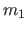
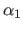
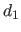
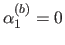

Next: LOCF解析とITT分析 Up: 研究法や分析法に関するメモ Previous: 適合度指標
多母集団同時分析：因子不変性 factorical invariance 4を確認する有力な方法。母集団間で因子平均を比較することができる。
「同一」といっても意味は様々：因子負荷だけが等しい，因子負荷・分散共分散の全てが等しい，など
| モデル番号 | 等値条件 |
| 0（配置不変 configural invariance） | 等値条件なし |
| 1（測定不変 metric invariance） | 因子負荷が等しい |
| 2 | 因子負荷，共通因子の分散共分散が等しい |
| 3 | 因子負荷，独自因子の分散共分散が等しい |
| 4 | 因子負荷，共通因子の分散共分散，独自因子の分散共分散が等しい |
母集団によって因子の分散・共分散が異なる可能性があるので，因子の分散ではなく任意の因子負荷を1に固定する。
標本サイズが大きいとモデルは棄却されるというカイ2乗検定の欠点はあるが，因子不変性の検証にあたっては，有意水準を調整したとしても測定不変（モデル1）は統計学的に確認したいところ。
カイ2乗検定ではなく，適合度指標によって因子不変性を確認してはいけないのか？
平均を考えないときの回帰式（データは平均=0になるよう変換）：
平均を考えるときの回帰式：
ただし， は切片， は因子平均， は誤差変数。
すると，観測変数の平均は
となる。
母集団が男女のように複数ある場合，
のように，切片は各群共通で因子平均が群間で異なるという仮定をおくことが多い6。 ただし，識別のために  などと固定する。
因子平均そのものの値は，標準偏差が考慮されていないのであまり意味がない。 そこで，因子の標準偏差で標準化して，
という効果量の形で評価するとよい。つまり，女子の因子平均は男子 (=0) と比べて標準偏差いくつ分大きい（小さい）という意味である。
因子分散が男女で大きく異なる場合は，女子の因子標準偏差のみを用いて標準化することに意味があるか疑問に感じる。
lavaanの書式は，次の通り：
~~: 共変関係
切片は，モデルに定数1を含むことで表現できる。
model <- '
x6 ~ 1 + x2 + x4
x5 ~ 1 + x2 + x4 + x6
x5 ~~ x5; x6 ~~ x6'
model <- '
f1=~x1+x2+x3+1*x4 # x4の負荷を1に固定
x1+x2+x3+x4 ~ 0*1 # 観測変数の切片を0に固定
x1~~x1; x2~~x2; x3~~x3; x4~~x4
f1~1 # 因子2に切片を設定
f1~~f1
f2=~x5+x6+1*x7 # x7の負荷を1に固定
x5+x6+x7 ~ 0*1 # 観測変数の切片を0に固定
x5~~x5; x6~~x6; x7~~x7
f2~~f2
f2~1+f1' # 因子2に切片を設定
母集団間で因子負荷に等値制約をおくことで初めて因子平均が比較できるようになる。
狩野・三浦 (2003) では，「平均構造のないモデル」での因子不変性を説明している。 ここでは，「平均構造のあるモデル」での因子不変性の説明になっている。
| モデル番号 | 等値条件 |
| 配置不変モデル | 因子平均のみ両群0で共通（識別のため因子分散を両群1に固定） |
| 弱測定不変モデル | 因子平均は両群0，因子負荷が等しい（切片と因子分散は異なる7） |
| 強測定不変モデル | 因子平均に差，因子負荷と切片が等しい（因子分散は異なる8） |
| 厳密な測定不変モデル | 因子平均に差，因子負荷と切片と誤差分散が等しい |
| 全母数が等しいモデル | 因子分散以外（因子平均，因子負荷，切片，誤差分散）が等しい |
狩野・三浦 (2003) では，因子不変性のチェックを適合度検定によって行っているが，本書の例では適合度指標によってチェックがなされている（CFI, TLI, AIC, BIC, RMSEA, SRMR）。
なぜ，因子分散は共通で因子平均が異なるモデルは検討しないのだろうか？（因子分散が異なれば，そもそも負荷を同じにしてもその意味は異なってしまう。）
semToolsパッケージの関数 measurementInvariance() で，配置不変モデルや測定不変モデルを検討できる。 モデル比較の出力は，関数 compareFit() に結果を渡してやればよい。
model <- 'f1 =~ V1+V2+V3+V4' # モデルの指定
out <- measurementInvariance(model, # モデル
data=dat, # データ
group="C", # グループ化変数
strict=T, # 厳密な測定不変モデルを検討するか
quiet=T) # モデル比較の結果を出力するか
compareFit(out) # モデル比較の結果を表示
fit <- lavaan(model, data=dat, group="C",
group.equal=c("loadings", "intercepts", "residuals", "means")) # 因子負荷，切片，誤差分散，因子平均に等値制約
Taichi Okumura